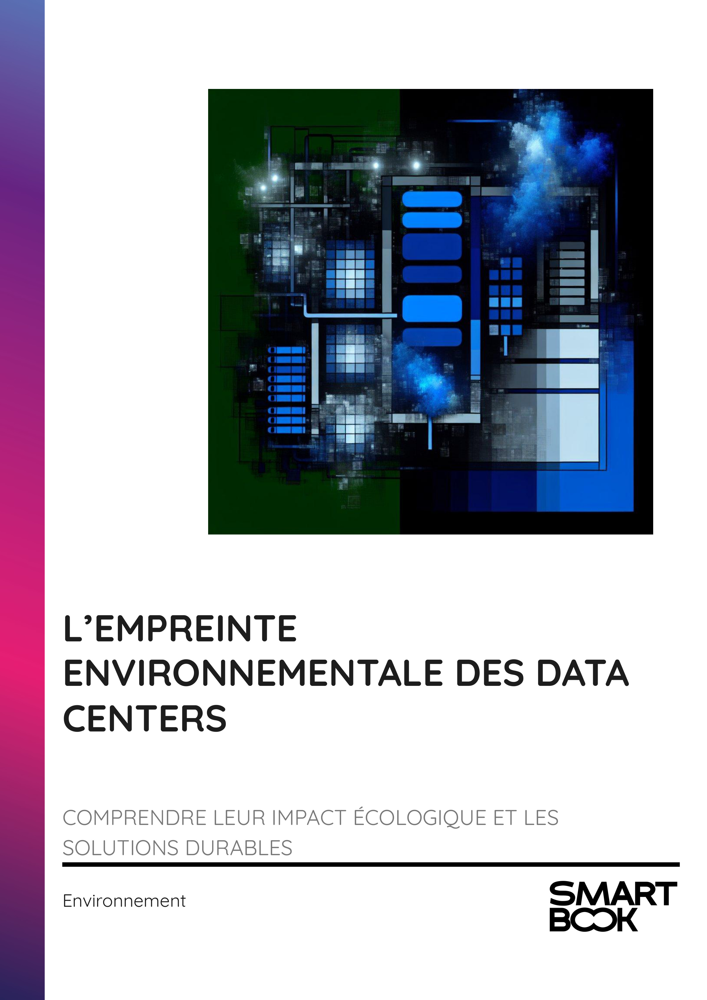

▶
Vitesse
++
+
=
-
--
INTRODUCTION - L'IMPACT ENVIRONNEMENTAL DU NUMÉRIQUE : UNE RÉFLEXION NÉCESSAIRE
Chapitre 1 - INTRODUCTION AUX DATA CENTERS : DÉFINITION ET COMPOSANTES
1.1 - Qu'est-ce qu'un Data Center ?
1.2 - Les Composantes Clés des Data Centers
1.3 - Évolution Historique des Data Centers
Chapitre 2 - IMPORTANCE DES DATA CENTERS DANS L'ÉCONOMIE NUMÉRIQUE
2.1 - Rôle des Data Centers dans les Services Numériques
2.2 - Impact Économique des Data Centers
2.3 - Les Acteurs Majeurs du Secteur
Chapitre 3 - L'EMPREINTE ÉCOLOGIQUE DES DATA CENTERS
3.1 - Consommation Énergétique des Data Centers
3.2 - Émissions de CO2 Associées
3.3 - Consommation d'Eau pour le Refroidissement
Chapitre 4 - CONSOMMATION ÉNERGÉTIQUE ET ÉMISSIONS DE CO2
4.1 - Analyse des Sources d'Énergie
4.2 - Comparaison avec d'Autres Secteurs
4.3 - Tendances Futures en Consommation Énergétique
Chapitre 5 - SOLUTIONS INNOVANTES POUR RÉDUIRE L'IMPACT ENVIRONNEMENTAL
5.1 - Technologies de Refroidissement Efficaces
5.2 - Intégration des Énergies Renouvelables
5.3 - Optimisation de l'Efficacité Énergétique
Chapitre 6 - INITIATIVES DES GRANDES ENTREPRISES POUR LA DURABILITÉ
6.1 - Engagements des Leaders du Secteur
6.2 - Projets de Recherche et Développement
6.3 - Collaboration avec les Gouvernements et ONG
Chapitre 7 - PERSPECTIVES ET RÉGLEMENTATIONS FUTURES
7.1 - Réglementations Environnementales Actuelles
7.2 - Projections pour les Décennies à Venir
7.3 - Rôle de la Société Civile et des Consommateurs
Chapitre 8 - RÉFLEXION SUR UN NUMÉRIQUE RESPONSABLE
8.1 - Concilier Technologie et Environnement
8.2 - Sensibilisation et Éducation
8.3 - Vers une Économie Circulaire
CONCLUSION - VERS UN NUMÉRIQUE DURABLE ET RESPONSABLE
📄 Consulter les annexes du livre
Mentions légales